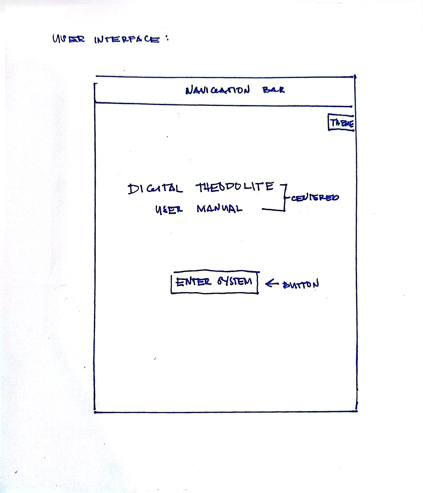
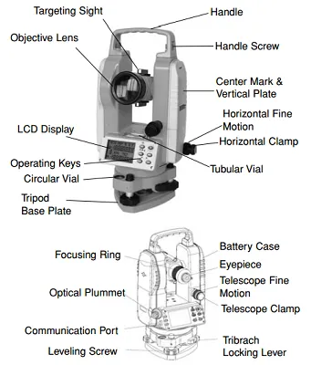
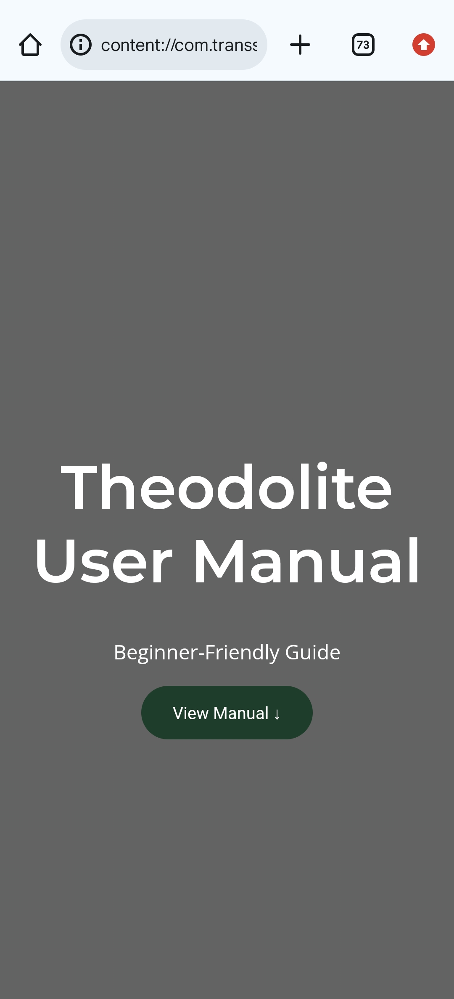
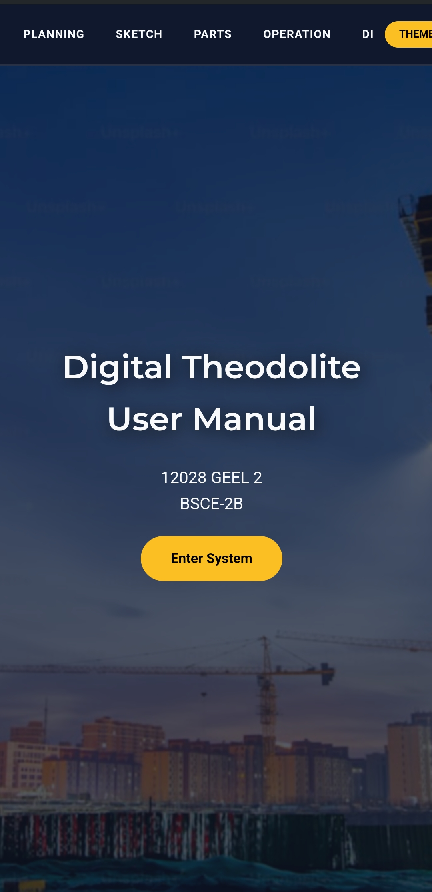

Purpose: To provide a technical, interactive guide for accurate instrument setup and data collection.
Target User: Civil Engineering students and beginner field surveyors.
Below is the hand-drawn layout of the system interface used as the blueprint for this digital version.

The operation of a theodolite involves proper setup, leveling, and precise alignment to ensure accurate angle measurements. The following procedure outlines the standard method used in field surveying.
Station A (Backsight): 15° 20' 00"
Station B (Foresight): 110° 45' 30"
Horizontal Angle = 110° 45' 30" − 15° 20' 00"
Result = 95° 25' 30"
Reference the diagram below for the primary physical components of a digital theodolite.

The sighting tube containing lenses to magnify the target.
The lens the surveyor looks through; adjustable for focus.
Used to center the plate bubble for accurate leveling.
Displays horizontal and vertical angle measurements.
Used to center the instrument exactly over a ground point.
The base that connects the theodolite securely to the tripod.
While the previous section outlines the setup and operational procedure of the theodolite, this section focuses on the actual measurement of horizontal angles between two points.
In surveying practice, the instrument is first aligned with a backsight (BS), then rotated toward a foresight (FS). The difference between these readings represents the horizontal angle.
The demonstration above illustrates how angular readings are obtained in the field using the backsight and foresight method. This process is fundamental in surveying tasks such as traverse computation and site alignment.
Note: Due to the precision required in actual surveying work, users are encouraged to consult standard references and guided practice for complete procedural mastery.

The draft version presents a basic and simple user interface, focusing only on core layout and structure. At this stage, no visual enhancements, styling improvements, or interactive elements were applied.

The final version demonstrates significant improvements in both visual design and user experience. A structured layout, improved typography, and a themed background were introduced to enhance the overall interface. The addition of a blurred construction site background creates a more immersive environment while maintaining readability. Navigation and interactive elements were also refined, resulting in a more polished, professional, and user-friendly system.
Declaration: The overall concept, design decisions, and content of this system were developed by the group. Artificial Intelligence was used only as a support tool for refining code structure, improving CSS styling, and assisting in implementing certain features. The group possesses prior knowledge in programming from foundational courses, which enabled independent understanding, modification, and integration of the generated code. All technical procedures and engineering-related content were reviewed and verified by the group to ensure accuracy and alignment with course standards.